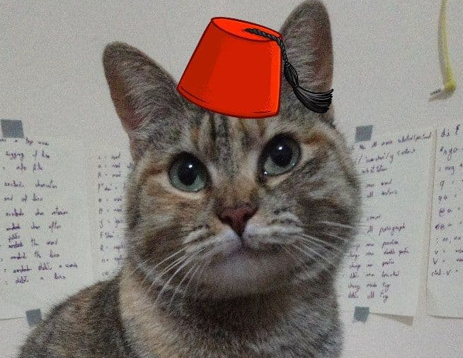
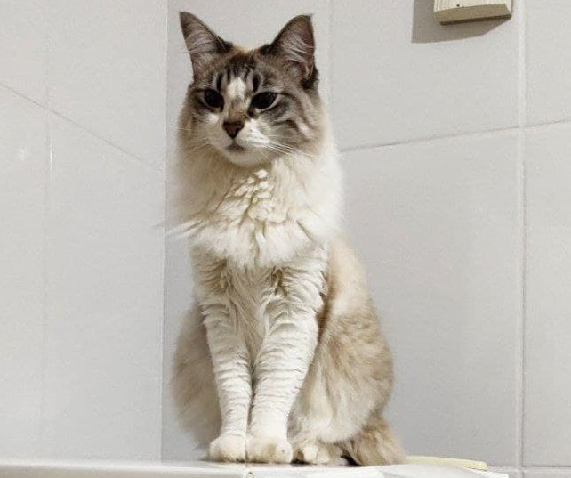
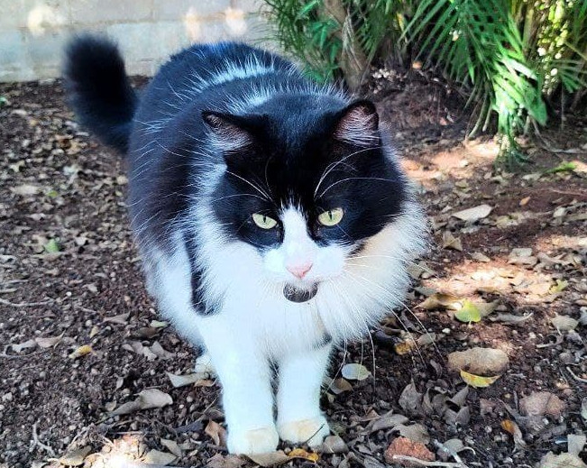

Syrah, a caçadora.
Syrah é uma gatinha muito habilidosa na caça, já conseguiu caçar diversos outros animais como pássaros, lagartos e outros insetinhos. mas ela gosta mesmo de comer geléia de morango, sorvete e mel de abelhas.
Explore

Flafi, a barraqueira.
Criada na principal avenida do país, Flafi herdou um comportamento elitista e mimado. Mesmo assim ela é muito fofinha, mas em certos momentos ela SURTA.
Explore

Berlô, o maconhista.
Berlô, é um gato chic-hippie, típico de barão geraldo, vive sua vida tranquila comendo frutinhas das ruas e gosta muito de cafuné.
Explore